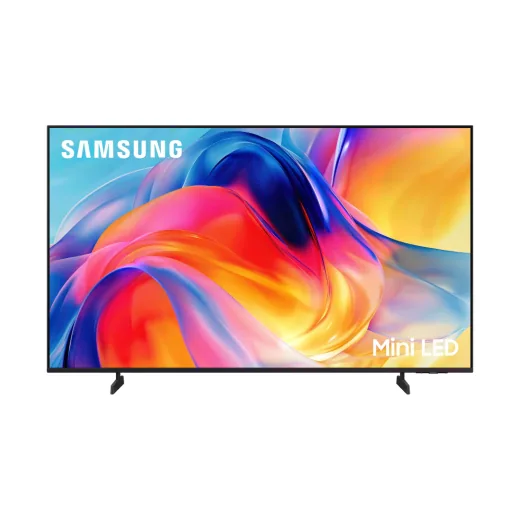

Samsung · Modelo UN43M70HA
Televisor Samsung 43" Mini LED 4K · UN43M70HA
L 7,390
Más barato en Diunsa · ahorras hasta L 5,600 frente a la tienda más cara
Precio en cada tienda
| Tienda | Precio | Antes | Disponibilidad | |
|---|---|---|---|---|
| Diunsa | L 7,390 | Disponible | Ver en tienda › | |
| Walmart | L 7,420 | Disponible | Ver en tienda › | |
| Lady Lee | L 7,995 | Disponible | Ver en tienda › | |
| La Curacao | L 7,997 | Disponible | Ver en tienda › | |
| RadioShack | L 12,990 | — | Disponible | Ver en tienda › |
Precios referenciales tomados de cada tienda el 28 de noviembre de 2026. El precio válido es el que muestra la tienda al comprar.
Historial de precio
Lo seguimos desde el 1 de noviembre. Precio más bajo registrado: L 7,390 en Diunsa (25 de noviembre), igual que hoy. Cambios de precio registrados: 9.
Características
| Cantidad de entrada y salida | 4 HDMI, 2 USB, 1 Salida Óptica, 1 Entrada RF, 1 LAN Ethernet |
|---|---|
| Cant. Puertos USB | 2 |
| HDR | Quantum HDR, HDR10+, HLG |
| Marca | Samsung |
| Medida de altura | 55.8 cm (sin base) / 62.3 cm (con base) |
| Medida de ancho | 96.0 cm |
| Medida de peso | 9.4 kg |
| Medida de profundidad | 2.69 cm (sin base) / 22.0 cm (con base) |
| Modelo o serie del producto | UN43M70HAPXPA |
| Panel | VA Mini LED |
| Resolución | 4K Ultra HD (3840 x 2160) |
| Resolución nativa | 3840 x 2160 Píxeles |
| Salida de potencia de audio | 20W (2.0 Canales) |
Descripción
Inteligencia artificial y tecnología MINI LED en cada detalle
El Samsung UN43M70HAPXPA combina una calidad de imagen sorprendente, funciones inteligentes avanzadas y un diseño elegante para ofrecer una experiencia de entretenimiento superior en espacios modernos.
El Samsung UN43M70HAPXPA incorpora tecnología MINI LED para proporcionar un mayor control de la iluminación, colores vibrantes y un excelente nivel de detalle en cada escena. Su pantalla de 43 pulgadas es ideal para salas, habitaciones, oficinas y espacios de entretenimiento donde se busca calidad visual y eficiencia de espacio.
Equipado con tecnología Vision AI, este Smart TV optimiza automáticamente la experiencia de visualización para ofrecer imágenes más nítidas y contenido mejor adaptado a cada tipo de programa. Además, brinda acceso a aplicaciones, plataformas de streaming y servicios inteligentes desde una interfaz intui
Otros televisores Samsung
 Televisor Samsung 43" LED 4K · UN43U8000HL 6,995En 4 tiendas · más barato en Gallo más Gallo
Televisor Samsung 43" LED 4K · UN43U8000HL 6,995En 4 tiendas · más barato en Gallo más Gallo Televisor Samsung 43" LED 4K Smart · UN43U8000FL 6,490En 5 tiendas · más barato en Diunsa
Televisor Samsung 43" LED 4K Smart · UN43U8000FL 6,490En 5 tiendas · más barato en Diunsa Televisor Samsung 50" LED 4K Smart · UN50U8000FL 8,490En 2 tiendas · más barato en Diunsa
Televisor Samsung 50" LED 4K Smart · UN50U8000FL 8,490En 2 tiendas · más barato en Diunsa
Televisor Samsung 50" Mini LED 4K · 50UN50M60HL 8,490En Diunsa Televisor Samsung 50" LED 4K · UN50U8000HL 8,497En 7 tiendas · más barato en RadioShack
Televisor Samsung 50" LED 4K · UN50U8000HL 8,497En 7 tiendas · más barato en RadioShack Televisor Samsung 50" QLED 4K Smart · QN50Q60DAL 8,990En Diunsa
Televisor Samsung 50" QLED 4K Smart · QN50Q60DAL 8,990En Diunsa Televisor Samsung 50" Mini LED 4K Smart · UN50M70HAL 9,495En 3 tiendas · más barato en Lady Lee
Televisor Samsung 50" Mini LED 4K Smart · UN50M70HAL 9,495En 3 tiendas · más barato en Lady Lee Televisor Samsung 50" LED 4K Smart · UN50DU7000L 9,547En Elektra
Televisor Samsung 50" LED 4K Smart · UN50DU7000L 9,547En Elektra